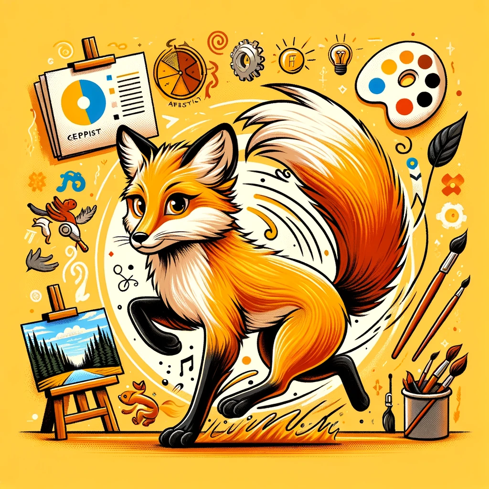

코끼리
성실의 대표
코끼리는 신뢰할 수 있고 근면한 동물로 알려져 있습니다. 강한 기억력과 집단의 안정과 질서를 중시하는 존재입니다.
이들은 사회적 구조에서 중요한 역할을 맡으며, 위기 상황에서도 집단을 안정적으로 이끌 수 있는 능력을 가지고 있습니다.
장점
• 협동심 : 비버는 팀워크를 통해 복잡한 프로젝트를 계획하고 수행합니다.
이이들은 협력하여 공동의 목표를 달성하는 능력이 뛰어납니다.
• 체계적 : 비버는 체계적이고 계획적인 접근을 통해 업무를 효율적으로 처리합니다.
이들의 체계적인 행동은 안정적이고 예측 가능한 환경을 만듭니다.
• 책임감 : 비버는 가족과 조직의 안녕을 위해 책임감 있게 행동합니다.
이들은 자신의 역할을 충실히 수행하며, 조직의 안전과 번영을 위해 노력합니다.
단점
• 보수성과 적응력 부족 : 코끼리는 변화에 대해 다소 보수적이고 적응력이 떨어지는 경향이 있습니다.
이는 새로운 아이디어나 방법을 수용하는 데 시간이 걸릴 수 있음을 의미합니다.
• 고집 : 코끼리는 고집이 세어 새로운 아이디어나 방법을 수용하는 데 어려움을 겪을 수 있습니다.
이로 인해 새로운 상황에 빠르게 적응하는 데 어려움을 느낄 수 있습니다.
• 느린 적응력 : 새로운 상황에 빠르게 적응하는 데 시간이 걸리며,
이는 급격한 변화에 대응하는 데 어려움을 초래할 수 있습니다.
• 궁합이 좋은 동물은?

비버
코끼리와 비버는 모두 집단의 안정과 질서를 중요시하는 동물입니다.
코끼리는 집단의 리더로서 집단을 보호하고 이끌며,
비버는 그들의 구조적인 둥지 건설 능력으로 집단의 생존에 기여합니다.
이 두 동물은 함께 할 때 서로의 생활 방식을 보완하며, 협력 관계를 이룰 수 있습니다.
비버의 체계적이고 목표 지향적인 접근 방식은 코끼리가 중시하는 질서와 안정성을 강화시켜 줍니다.
• 궁합이 안맞는 동물은?

여우
여우는 자유롭고 독립적인 성격의 동물로,
때때로 교활하고 계산적인 면모를 보입니다.
이러한 특성은 코끼리의 성실하고 신뢰 중심적인 성격과 상충될수 있습니다.
코끼리는 여우의 변덕스러움과 예측 불가능한 행동을 신뢰하기 어렵게 느끼며,
이로 인해 두 동물 사이에 긴장이 생길 수 있습니다.